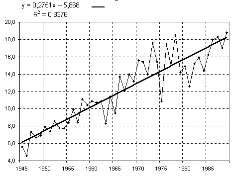
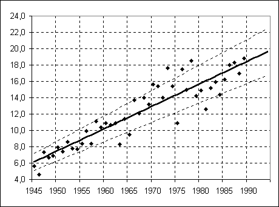

ЛАБОРАТОРНАЯ РАБОТА № LR-05
ЛИНЕЙНАЯ РЕГРЕССИЯ
Задание 1. Использование уравнения
регресии для прогнозирования
На основании данных о количестве врачей всех специальностей
в организациях, оказывающих медицинские услуги за 2004-2021гг., на основе
модели линейного тренда постройте прогноз
численности врачей на следующие 5 лет. Найдите границы 95%-го
доверительного интервала для прогноза.
- Откройте файл
В-1,
В-2,
В-3,
В-4,
В-5,
В-6,
В-7,
В-8,
В-9,
В-10,
В-11,
В-12,
В-13,
В-14,
В-15,
В-16,
В-17,
В-18,
В-19,
В-20
и сохраните его в своей папке.
- Скопируйте данные с листа "Врачи" на новый рабочий
лист с именем "regr-1".
- Постройте диаграмму типа "График" по своим
данным, оформите в соответствии с приведенным образцом:

- В качестве меток оси Х используйте значения
столбца А.
- Постройте линию линейного тренда на графике.
Выведите на график уравнение этой линии
(уравнение линейной регрессии) и значение
величины достоверности аппроксимации R2
(см. рис. выше). Чем ближе к 1 значение R2, тем более точно
линия тренда описывает фактические данные.
- Используя инструмент "Регрессия", получите
значения регрессионных коэффициентов.
Сравните значения полученных коэффициентов с
уравнением регрессии на графике.
- Используя вычисленные коэффициенты регрессии,
постройте прогноз численности врачей на следующие 5 лет. Вычислите границы 95%-го
доверительного интервала для каждого из
предсказанных значений (пример оформления
можно посмотреть здесь).
- Постройте второй график и отобразите на нем
исходные данные, линию тренда и границы 95%-го
доверительного интервала. Оформите в соответствии с
данным образцом:

Задание 2. Анализ «живых» данных.
- На сайте госстатистики https://orel.gks.ru/naselen (основные показатели), скачайте
данные «Рождаемость, смертность и естественный прирост (убыль) населения в Орловской области»
- Постройте прогноз на 5 лет, вычислив коэффициенты, с помощью инструмента «Регрессия»
- для числа людей родившихся в городе;
- для числа людей умерших в сельской местности.
Задание 3. Множественная регрессия
Маркетинговый отдел торговой фирмы проводит
исследование зависимости объема продаж
некоторого товара от его цены и рекламного
бюджета. Результаты исследований представлены в
файле LR-4.xls на вкладке "Продажи". Составьте
прогноз продажи товара при следующих значениях
рекламного бюджета и цены:
| Рекламный бюджет |
Цена |
Объем продаж
(прогноз) |
Объем продаж
(ниж. 95%) |
Объем продаж
(верх. 95%) |
| 50 000 |
25 |
|
|
|
| 75 000 |
50 |
|
|
|
| 100 000 |
75 |
|
|
|
| 125 000 |
25 |
|
|
|
| 150 000 |
50 |
|
|
|
| 175 000 |
75 |
|
|
|
- Перейдите на вкладку “Продажи”.
- Используя инструмент "Регрессия", получите
значения регрессионных коэффициентов,
описывающих зависимость объема продаж от
следующих параметров:
- только от цены товара;
- только от рекламного бюджета;
- от цены товара и от рекламного бюджета вместе.
- Вычислите величину достоверности
аппроксимации R2 в каждом случае.
Сформулируйте выводы и запишите их.
- Постройте соответствующие графики. Образец их
оформления дан выше, в Задании 1.
- Используя эти коэффициенты, предскажите объемы
продаж при различных значениях рекламного
бюджета и цены товара (ответ
можно посмотреть здесь).
{kind=link}
{kind=link}